Laboratory Automation
Hamilton Microstar Starlet
The Automated Systems Biology Lab specializes in decoding dynamic biological processes by applying high-throughput hardware automation and advanced computational pipelines. To alleviate experimental bottlenecks and enhance reproducibility, we orchestrate liquid handling robotics, automated microscopy and datascience workflows. We develop custom data science solutions to extract quantitative insights across diverse biological scales, ranging from neurobiology to single-molecule biophysics. To achieve this, our computational frameworks are built to process large variety of experimental inputs, handling everything from complex time-series data to multi-channel 3D image stacks.
A primary focus of our research is quantitative microbial ecology, where we develop custom software frameworks like ColonyInsight to dynamically track growth and competitive interactions in mixed microbial communities. We have a distinct focus on Saccharomyces cerevisiae, investigating the mechanistic drivers behind the structural development and growth behavior of mixed colonies. We also apply evolutionary engineering, bio-analytical methods, and extensive laboratory automation to develop optimized microbial consortia capable of degrading cellulose. Ultimately, our goal is to harness these engineered consortia to up-cycle cellulose into high-value bio-products.
Our laboratory is in charge of running a suite of automated instruments that covers the full experimental pipeline for typical molecular biology protocols. We are equipped with liquid-handling robots from Hamilton, Tecan and Opentrons that prepare and process samples with minimal human intervention. They can perform tasks like pipetting, plate handling and pinning/plating, using aseptic techniques if needed. Our facility is also equipped with bioanalytical tools like a Tecan Spark multimode reader that provides UV/VIS and fluorescence spectrophotometry, and different microscopes. Microscopy imaging is built around fully motorized Nikon Ti2 microscopes for widefield and spinning-disc confocal image acquisition.
We are open to collaboration, so do not hesitate to contact us!
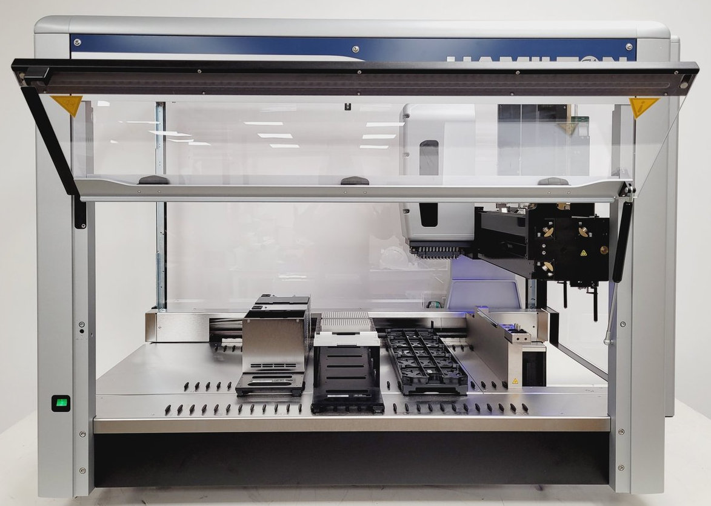
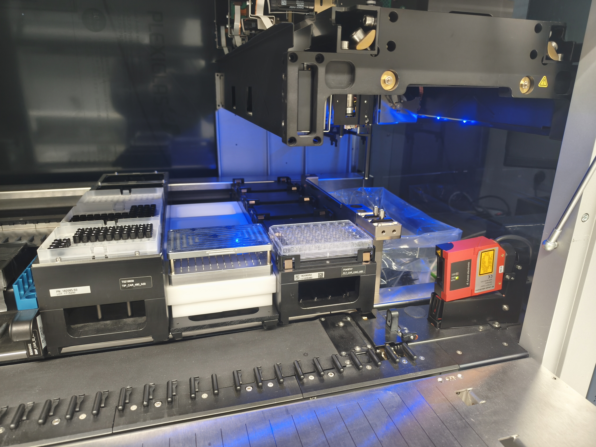
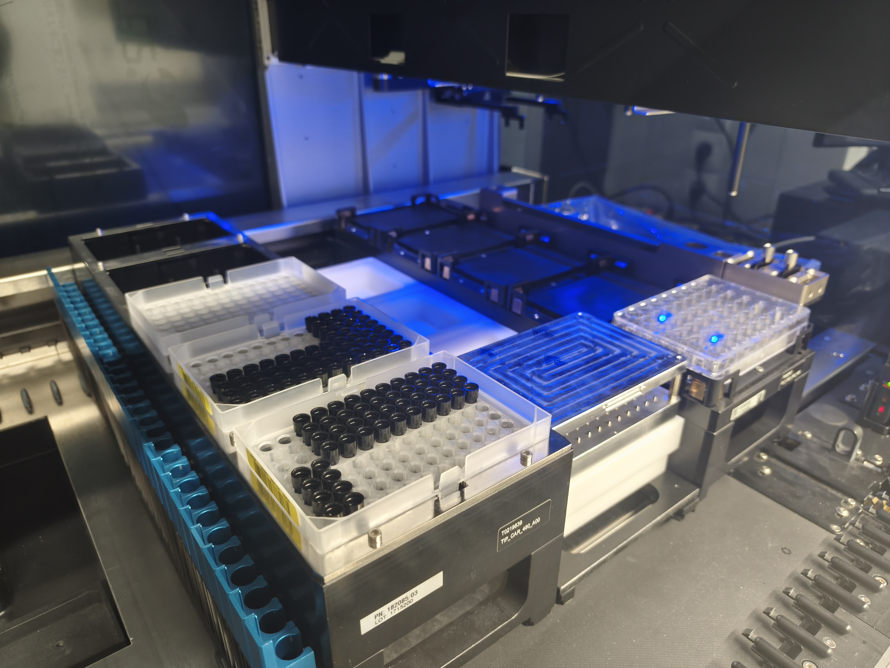
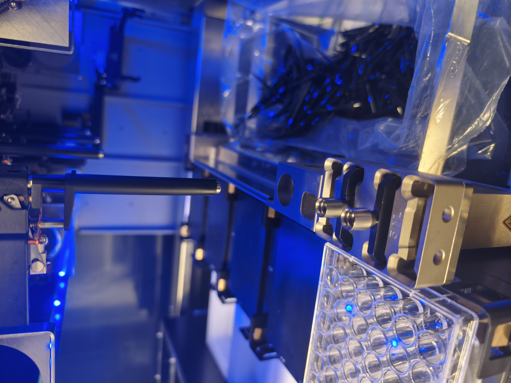
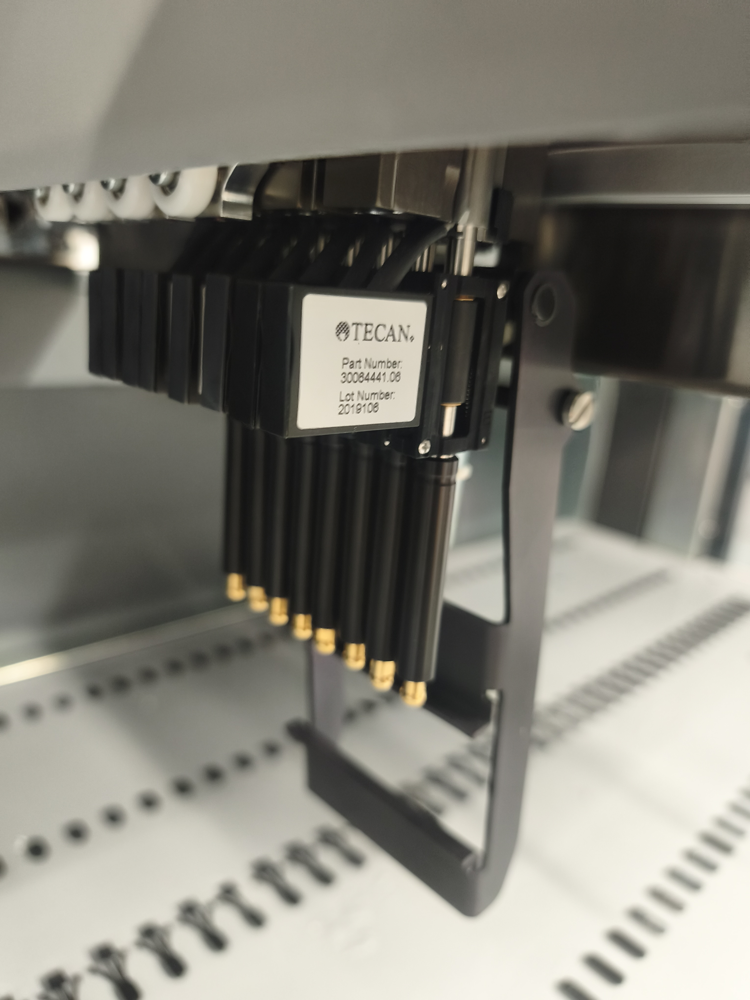
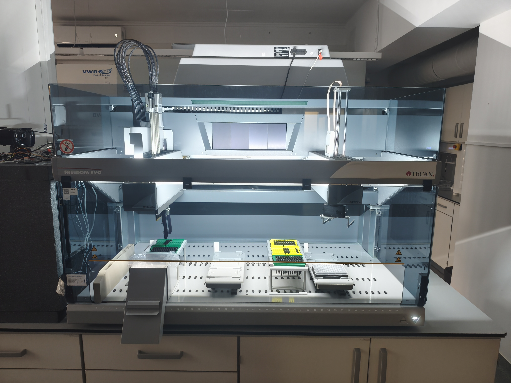
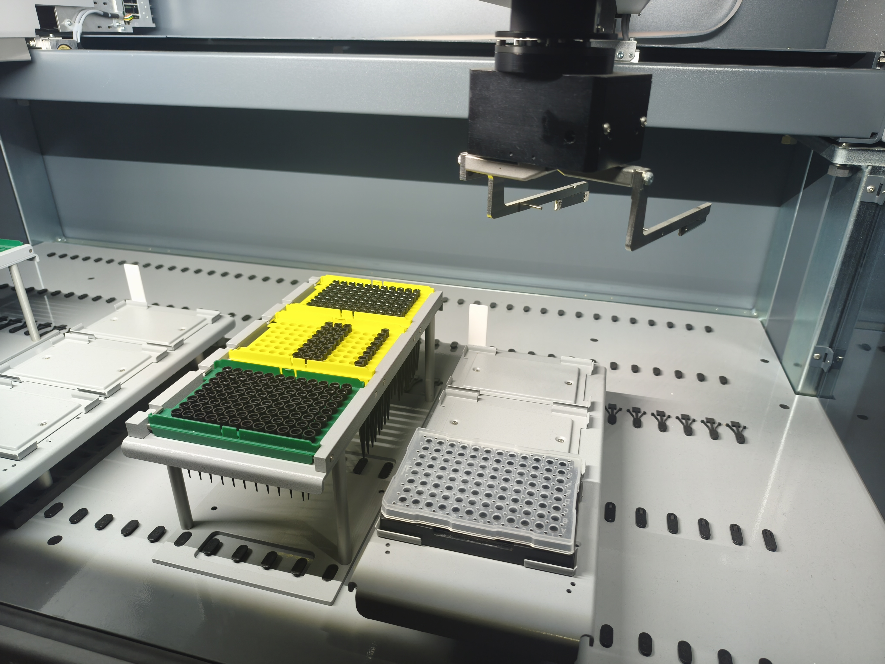
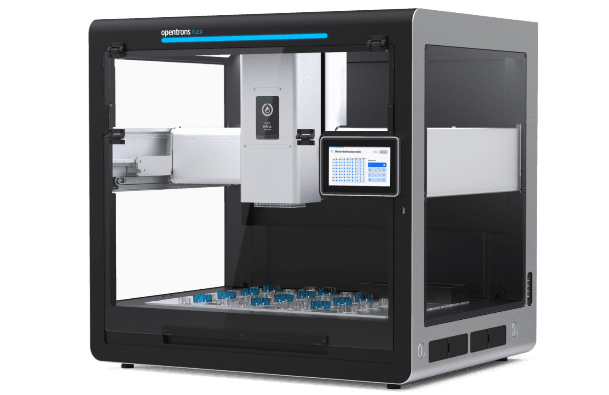
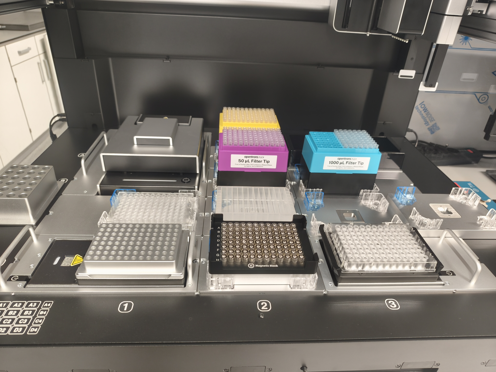
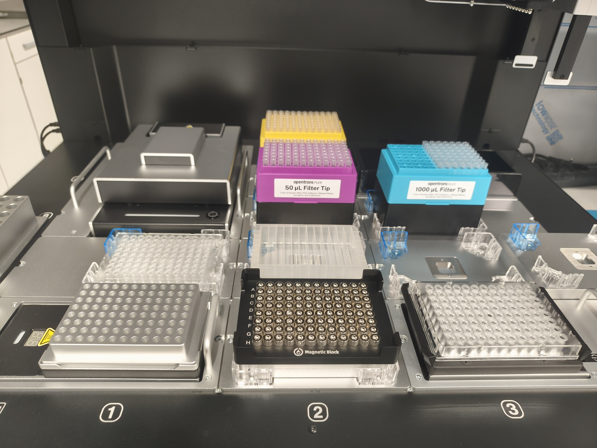


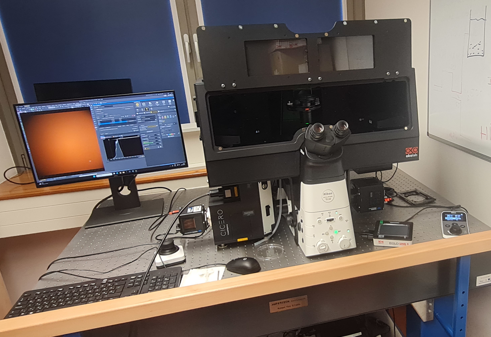
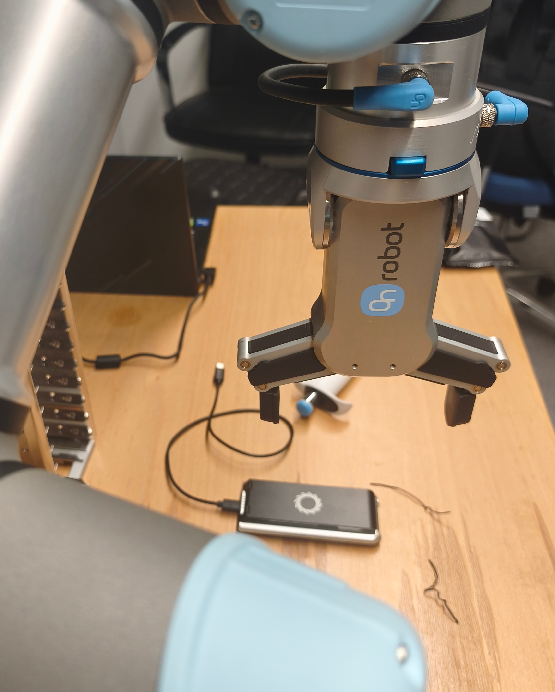
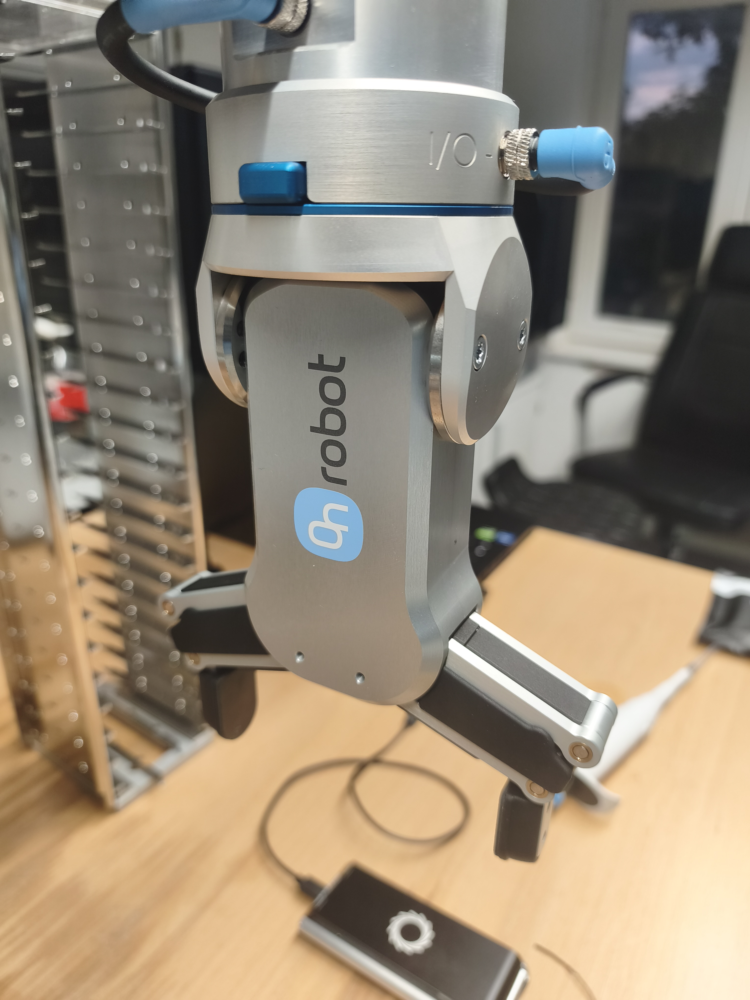
Selected peer-reviewed papers and methods from the group and its collaborations, spanning automated image analysis, quantitative microscopy and physical chemistry.
Our teaching spans three main directions: biophotonics and bioimaging, laboratory automation and robotics, and bioanalytics and molecular diagnostics. These graduate courses connect optics, measurement science and automation with hands-on laboratory practice, and are complemented by individual research courses — guided study, independent laboratory work and thesis projects — that let students pursue their own topics in the lab.
Courses
The main goal of the course is to give a good general overview of optical methods used in the fields of biological sciences.
View course →The aim of this course is to give a solid introduction to students to laboratory automation.
View course →The course introduces students to the principles and practice of bioanalytics and molecular diagnostics.
View course →Individual & research courses
The student works on an individual topic with a chosen supervisor.
View course →The student carries out independent research that prepares them for writing their thesis.
View course →The student carries out independent research that prepares them for writing their thesis.
View course →We welcome students, collaborators and visitors interested in automation, quantitative microscopy and systems biology — the best way to reach us is by email.